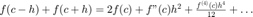

Math 315 Lab 1: Examining Derivative Approximations through the Central Difference Quotient
This lab explores the first and second derivative approximations by the central difference quotient. I will go over theoretical bounds for truncation error and the an optimal h value to use for approximations.
Contents
First Derivative Approximation
First, I will explore the first derivative approximation by the central difference quotient which uses the n1deriv function, which is defined as such.
function dydx = n1deriv(f, c, h) dydx = (f(c+h) - f(c-h)) ./ (2.*h); end
This function can be derived from the Taylor Series of f.

As h approaches 0, the equation above becomes . The biggest truncation error term is because h is small. Therefore the truncation error can be bounded by .
x = linspace(1,2,50); h1 = 1; approx1 = n1deriv(@exp,x,h1); h2 = 1e-5; approx2 = n1deriv(@exp,x,h2); h3 = 1e-15; approx3 = n1deriv(@exp,x,h3); actual = exp(x);
To find the most optimal h to use for approximation, the maximum absolute and relative errors are calculated for 20 different values of h based on a log scale. It is interesting to see the error decrease initially and then increase to infinity. The initial decrease is because of the approximation of the tangent line is more accurate as the distance between the two points used decreases. More interestingly, the error increases as h gets too small and approaches machine epsilon at ~2e-16. The point at which the absolute error stops decreasing and starts increasing is when the roundoff error becomes greater than the truncation error at ~1e-5. That point is also the most optimal value for h.
h_values = logspace(-1, -20, 20); max_abs_err = zeros(size(h_values)); max_rel_err = zeros(size(h_values)); for i=1:length(h_values) h = h_values(i); approx = n1deriv(@exp,x,h); abs_err = abs(actual-approx); rel_err = actual ./ approx - 1; max_abs_err(i) = max(abs_err); max_rel_err(i) = max(rel_err); end n1deriv_table = table(h_values', max_abs_err', max_rel_err', 'VariableNames', {'h', 'Max Absolute Error', 'Max Relative Error'}); disp('Table of h values, maximum absolute error, and maximum relative error when approximating the first derivative of e^x') disp(n1deriv_table)
Table of h values, maximum absolute error, and maximum relative error when approximating the first derivative of e^x
h Max Absolute Error Max Relative Error
______ ____________________ _____________________
0.1 0.0123212525112564 -0.00166472427038911
0.01 0.000123151550653233 -1.66664722127674e-05
0.001 1.23150872433087e-06 -1.66666460077458e-07
0.0001 1.23226389092679e-08 -1.66571989534958e-09
1e-05 1.85681692244088e-10 -1.40792932867839e-11
1e-06 7.75476571845957e-10 1.67074576395976e-10
1e-07 7.66221841530523e-09 1.01461705703798e-09
1e-08 7.09378493723989e-08 1.32520776574552e-08
1e-09 9.57207936025384e-07 5.93933924264434e-09
1e-10 4.49653185885523e-06 7.01804461877842e-07
1e-11 4.64028169773201e-05 9.37190665051268e-06
1e-12 0.000850337800613943 -1.14833461524189e-05
1e-13 0.0064846335733133 0.00127034925978586
1e-14 0.0716426265504015 0.00810402353155637
1e-15 1.08042200757805 -0.0212544031245949
1e-16 7.38905609893065 Inf
1e-17 7.38905609893065 Inf
1e-18 7.38905609893065 Inf
1e-19 7.38905609893065 Inf
1e-20 7.38905609893065 Inf
To check our reasoning, a large, small, and optimal value of h is chosen and the approximations are graphed against the 'exact' solutions. The results reflect the explanation above.
figure; hold on; plot(x, approx1, 'r', 'LineWidth', 1.5); plot(x, approx2, 'g', 'LineWidth', 1.5); plot(x, approx3, 'b', 'LineWidth', 1.5); plot(x, actual, 'p', 'LineWidth', 1.5); xlabel('x'); ylabel('y'); title('Approximations of the first derivative of y=e^x'); legend({'h=1', 'h=1e-5', 'h=1e-15', 'Exact'},... 'FontSize', 12,... 'Location', 'north') hold off; drawnow;

Second Derivative Approximation
Second, I will explore the second derivative approximation by the central difference quotient which uses the n2deriv function, which is defined below.
function dydx2 = n2deriv(f, c, h) dydx2 = (f(c-h) - 2.*f(c) + f(c+h)) ./ (h.^2); end
This function can be derived from the Taylor Series of f.

As h approaches 0, the equation above equals . Since h is small, the largest truncation error term is , which means the truncation error can be bounded by .
To find the most optimal h value to use for approximation, the same method of testing through calculating the maximum absolute and relative errors for 20 different h on a log scale is used. The same pattern of an initial decrease in error followed by an increase in error is seen here. However, the point at which the error stops decreasing and starts increasing changed. Since in the formula, the denominator has an h^2 term, this means that any h value with a smaller magnitude than the machine precision squared (~1.5e-8) will result in dividing by 0. Therefore the roundoff error will be much larger than when calculating the first derivative. In fact, the optimal value for h seems to be nearly the squareroot of the optimal value of h used in the first derivative formula.
for i=1:length(h_values) h = h_values(i); approx = n2deriv(@exp,x,h); abs_err = abs(actual-approx); rel_err = actual ./ approx - 1; max_abs_err(i) = max(abs_err); max_rel_err(i) = max(rel_err); end n2deriv_table = table(h_values', max_abs_err', max_rel_err', 'VariableNames', {'h', 'Max Absolute Error', 'Max Relative Error'}); disp('Table of h values, maximum absolute error, and maximum relative error when approximating the second derivative of e^x') disp(n2deriv_table) x = linspace(1,2,50); h1=1; approx1 = n2deriv(@exp,x,h1); h2=1e-4; approx2 = n2deriv(@exp,x,h2); h3=1e-7; approx3 = n2deriv(@exp,x,h3);
Table of h values, maximum absolute error, and maximum relative error when approximating the second derivative of e^x
h Max Absolute Error Max Relative Error
______ ____________________ _____________________
0.1 0.00615959963111123 -0.000832916831931874
0.01 6.15756592896588e-05 -8.3332892637511e-06
0.001 6.16004188103147e-07 -8.31309090454369e-08
0.0001 1.49051906817022e-07 2.14222564132172e-08
1e-05 1.45158816122759e-05 2.06193340845928e-06
1e-06 0.00147653139409165 0.000204439380555144
1e-07 0.194810899359635 0.0283924430530083
1e-08 13.0472881350733 Inf
1e-09 894.454431367262 Inf
1e-10 177629.278530593 Inf
1e-11 8881791.58605735 Inf
1e-12 888178425.367318 Inf
1e-13 88817841977.4016 Inf
1e-14 17763568393995.1 Inf
1e-15 2.66453525910038e+15 Inf
1e-16 7.38905609893065 Inf
1e-17 7.38905609893065 Inf
1e-18 7.38905609893065 Inf
1e-19 7.38905609893065 Inf
1e-20 7.38905609893065 Inf
To check our reasoning, a large, small, and optimal value of h is chosen and the approximations are graphed against the 'exact' solutions. The results reflect the explanation above.
figure; hold on; plot(x, approx1, 'r', 'LineWidth', 1.5); plot(x, approx2, 'g', 'LineWidth', 1.5); plot(x, approx3, 'b', 'LineWidth', 1.5); plot(x, actual, 'p', 'LineWidth', 1.5); xlabel('x'); ylabel('y'); title('Approximations of the second derivative of y=e^x'); legend({'h=1', 'h=1e-4', 'h=1e-7', 'Exact'},... 'FontSize', 12,... 'Location', 'north') hold off; drawnow;